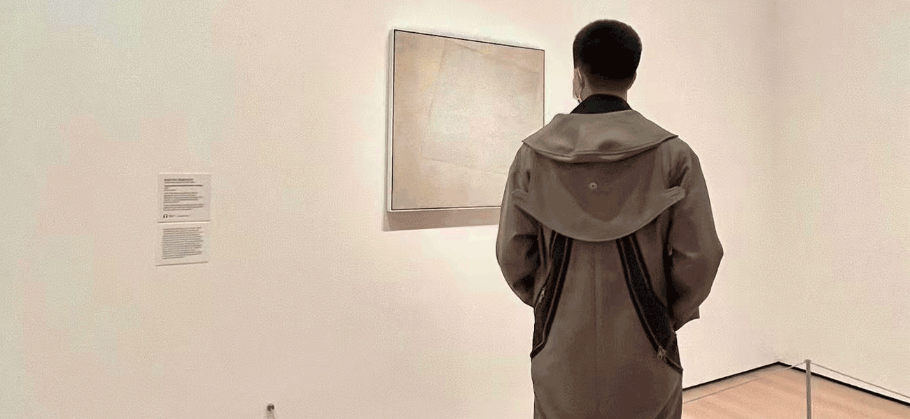

Skatewear

Skatewear. This particular wear was made popular by the culture of skateboarders across the globe. Staple features within this sub-wear include items such as baseball hats, beanies, flannels, skate sneakers, and wide-leg shorts.
Techwear

Techwear. Originated from Japan, this is a style that focuses on functionality and style. It takes pieces such as cargo pants and military vests and styles them using high-quality fabrics.
Hypebeast

Hypebeasts. This is a style that is mainly promoted by celebrities. There is no specific style as all the trendy brands that draw a lot of attention can be considered as hype.
Athleisure
Athleisure. Casual athletic wear that is wore in a lifestyle sense. It consists of attires such as running sneakers, twill joggers, hoodies, tapered sweatpants, and other athletic accessories.